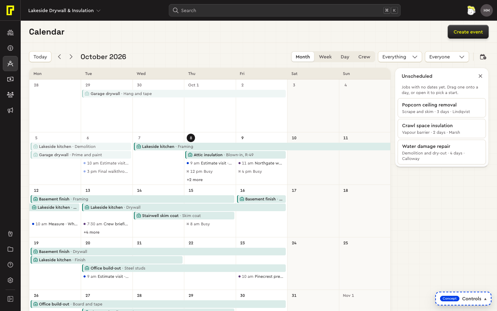
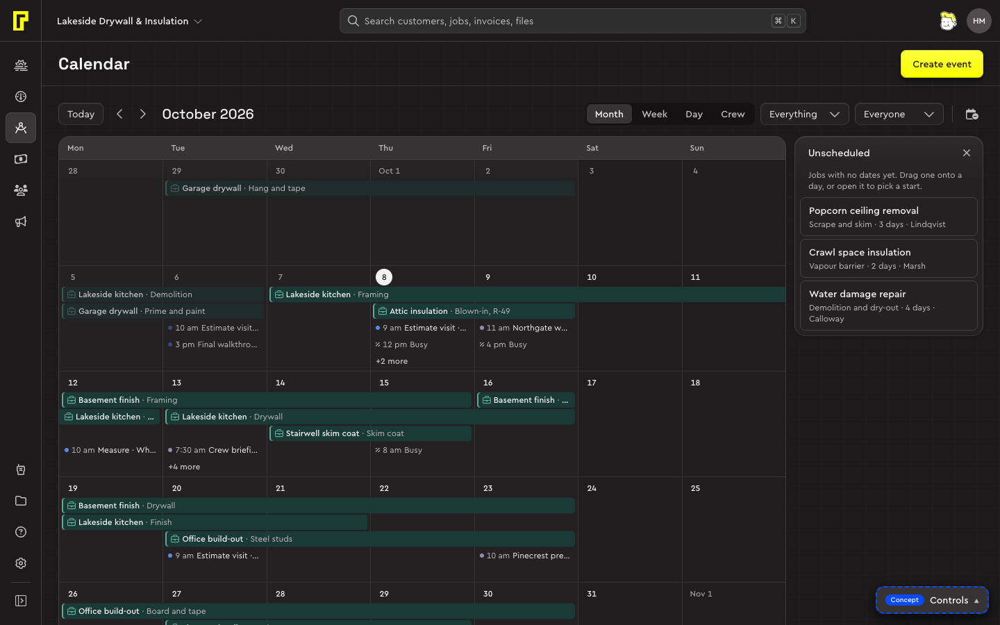
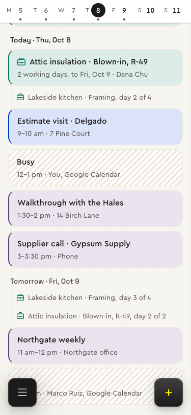
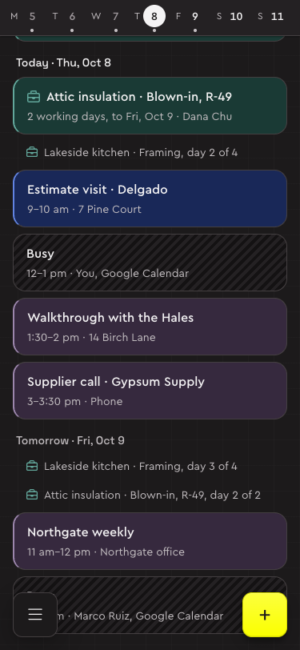

Bolster's Calendar (Jobs → Calendar) shows who is where, and when. The system's calendar puts everything that has a date on one grid: a job's phases across their days, sales appointments and events at their times, and busy time from other calendars, for everyone or the people picked.




Try it: the calendar concept, with made-up data for a drywall and insulation company.
Who it's for
Assumed: the office, seeing everyone's week, to book site visits around the crews and move work when a phase slips. Whether each person's own day should come first is open.
Parts
| Part | What it holds | Built from |
|---|---|---|
| Page header | Calendar, and Create event. | App shell |
| Toolbar | Today, back and forward, the period in words; the view (Month, Week, Day, Crew) beside Show and People, which read back what they pick and end in a chevron (“Everything”, “Everyone”); a rule, then Unscheduled, an icon button with its count in its name (D80, D82). | Toolbar, Segmented control, Button |
| The grid | Month (weeks that share the page's height), Week and Day (an all-day row over the hours, 7 to 7), or Crew (people down the side, the week across). The page's full width. | Drafts, in the concept |
| What's on it | A job's phase is a bar with the job's mark (a briefcase) and its name first. An appointment is its time, then what and who. Busy time is hatched and says Busy. | Drafts, with Avatar |
| Summary | What, when (“day 2 of 4” on a running phase), where, who, and Open job. A popover over the grid, a sheet on phones. | Popover |
| Unscheduled | Jobs with no dates, in a tray beside the calendar from 1024 wide, a sheet below. | Draft |
| Making one | A draft on the grid and a short card beside it; the whole dialog behind More options. | Dialog, Field, Tabs, Chip |
Colour says what kind, never which job (trying out, D100, D101): job work green, sales appointments blue, events purple, each a tint with its hue at the edge; other calendars grey and hatched; done things fade. Show is the key, a swatch beside each kind. Weeks start on Monday everywhere (D76); weekends are only just tinted, never blocked. Times are 12-hour: 9 am, 1:30 pm. Patterns: Drag and drop, Picking dates, Page scrolling, Feedback.
Behaviour
The calendar works on its items in place: a click opens a summary, a drag moves, and every change says so in a toast with Undo (I18).
| What | How |
|---|---|
| Opening | A click, Enter or Space on a bar, an appointment or busy time opens its summary; focus goes to its title. Close, Escape or a click outside returns focus to what opened it. |
| A full day | Bars first, then appointments by time; past what fits, “+n more” (named “n more on Tue 13 Oct”) opens the day's list. In Week and Day the all-day row is always two lanes, so the hours never move between pages. |
| Moving | With a mouse or pen, drag a bar or an appointment: a dark tag follows the pointer with where it would land, the days it would cover light up, and the drop saves it. In Week and Day an appointment snaps to 15 minutes; in Crew a drop on another row gives it to that person. Escape cancels. Busy time doesn't move. |
| Stretching | Drag a bar's end (it shows on hover) to change its last day; it can't end before it starts. |
| By keyboard and on phones | The summary's Starts (or Day and Starts), then Move: the same toast and Undo. Touch scrolls; phones move things in the summary. |
| Scheduling | Drag a job from Unscheduled onto a day, or open it, pick Start on, and Schedule. The tray opens the first time from 1280 wide, then as it was last left. |
| Adding | In Week and Day, a click on empty time makes a draft at that half hour; a drag over the hours draws its start and end. In Month and Crew a click on a day's empty space makes one there. A card opens beside the draft, focus in its first field: an Event or a Sales appointment, Bolster's two kinds (trying out, D96). |
| The dialog | Create event, More options or the c key: an event's guests and description, or a sales appointment's customer, type, who it's with and that person's free half hours, with Book anyway. What's missing is said under the form. |
| Editing and deleting | Edit and Delete sit in an event's summary, by Close. Delete is at once, with Undo. Jobs' phases and busy time change where they come from. |
| Scrolling | The page scrolls, never the card (D128). Month's weeks and Crew's people share the screen's height; Week and Day's hours stretch to it, an hour at least 3rem tall, past that the page scrolls, the weekdays and the all-day row sticking under the bars. |
| Phones | A week strip over the week's agenda; once scrolled away, the week comes back as a short header. A day in either scrolls to it; it opens at today. No Month, no dragging. |
Principles
- What has a date shows, with a word or a mark as well as a colour.
- A span is one bar, across its days in Month and Crew, in the all-day row in Week and Day. Squared where it carries on past a week's edge; its name once for screen readers. Bolster's Week and Day leave job bars out.
- Four views: Day is one column of hours; per-person columns are Crew's.
- A click opens a summary; the full record is one step further.
- Moving is dragging; the drop is the save, with Undo. The summary is the keyboard's and the phone's way.
- Undated work waits beside the calendar, to drag on.
- Making one is Google's way, with Bolster's fields: a draft where you click, the essentials in a card, the rest in Bolster's dialog.
Drafts
New parts this page carries, waiting for the product designer's approval before they move into the system.
| Draft | What it is | Decisions |
|---|---|---|
| Event bar | A job's phase across its days: the job's mark and name in job work's tint and edge, squared where it carries on; drag to move, drag its end to stretch. | D75, D100, D101, I18 |
| Appointment and busy time | An appointment is its time, then what; busy time is hatched and says Busy. In Week and Day, blocks at their hours, side by side where they overlap; under an hour, one line. | D75, I18 |
| Month grid | Weeks that share the page's height, bars in lanes, then appointments by time; past what fits, “+n more”. | D75, D76, I18 |
| Week and day grid | An all-day row over the hours, which stretch to the page; the now line across today. | D75, D128, I18 |
| Crew view | People down the side, the week across, a “No one yet” row for phases nobody has; a drop on a row gives it to them. | D75, I18 |
| Summary popover | What, when, where, who and Open job, Close in its corner; its Starts and Move are the keyboard's way to move. | D75, I18 |
| Unscheduled tray | Jobs with no dates beside the calendar, to drag onto a day; its toggle a calendar with a circled minus. | D75, D82, I18 |
| Week strip and agenda | Phones: the week's days over an agenda, each day a heading, bars first. | D75, I18 |
| Event draft and card | A draft in the accent where you click or drag, and a short card beside it (a sheet on phones). | D96, I18 |
| New event dialog | An Event (title, time, All day, guests as chips, location, description) or a Sales appointment (customer, type, who, available times, address, notes). | D96, I18 |
Open questions
- Who it's for first: the office seeing everyone's week (assumed), or each person's own day?
- What a job is here: a bar per phase (assumed), or one bar for the job?
- Moving a phase: does what follows move with it, as on the timeline? It should be one action, defined once.
- Other calendars: busy time only (assumed), or their titles too?
- The grid as one tab stop with arrow keys isn't built: every item is a button of its own, named with its day.
- Work hours, the default length and the appointment types are assumed (8 to 5, an hour; Estimate visit, Measure, Project consultation) until settings say.
Decisions and contracts
- D75The calendar, built as a conceptDecided
- D76Weeks start on Monday, everywhereDecided
- D80The calendar's toolbar: pickers with chevrons, the view beside them, a ruleDecided
- D82Unscheduled is an icon buttonDecided
- D96Creating events on the calendar: Bolster's dialog, Google's wayTrying out
- D100No colour per jobTrying out
- D101The calendar's colour says what kindTrying out
- D128The page is the one scrollerDecided
- I18Calendar